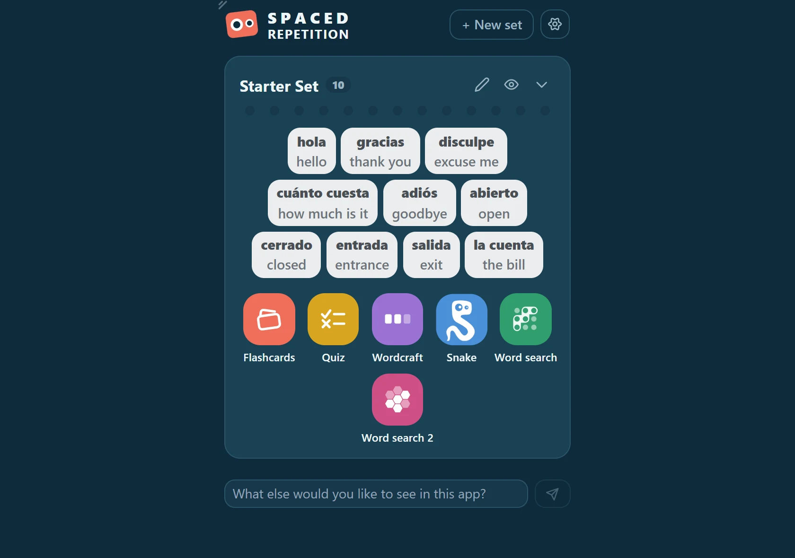
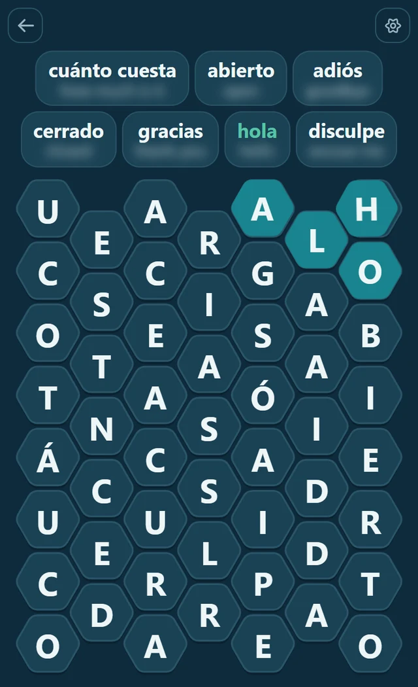
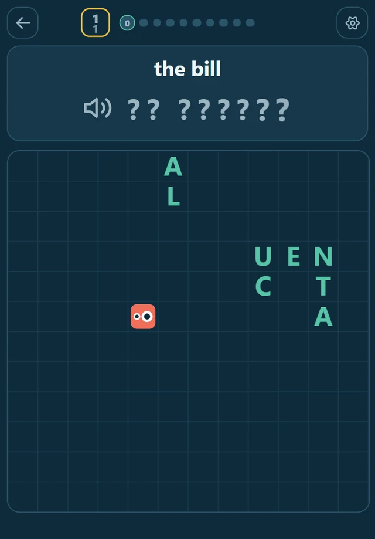

Vocabulary games that actually stick.
Swap five minutes of scrolling for a smart brain warm-up. Play word snake, hex word search and quick quizzes right in your browser, on phone or desktop. A built-in review schedule brings every word back just before you would forget it.



Your vocabulary
Every day the AI also offers a word of the day, based on the words you already have, to add to your vocabulary.
Import words from any source: YouTube, Google Translate, a paper book, any website.
+ Add your words Or ✨ Add new words with AIPick a game
Six ways to practise the same words. A word you miss in one game shows up again in the others.
See also
Short guides on building your vocabulary.
Questions
Are vocabulary games a good way to learn words?
They work best when the game makes you recall the word yourself. Here you choose, build, spell or hunt for the word, so every round is a small recall. Games don't replace reading and speaking, but they give you many repetitions without much boredom.
Is it free?
Yes. There is no account to create and there are no ads.
Which languages can I learn?
The starter set on this page comes in nine languages. In the app you can add words in any language and write the translation in yours.
Can I use my own words?
Yes. Paste a list, type words one by one, paste columns from a spreadsheet, or ask an AI for a list on any topic and paste what it gives you.
Does it work on my phone?
Yes. It runs in a mobile browser and you can add it to your home screen. Laptops and desktops work too.
Does it work offline?
After the first load, yes. Your progress stays on the device and you can move it to another one with a sync code.
What is spaced repetition?
A review schedule. A word you missed comes back in minutes, a word you knew waits longer each time: hours, then days, then weeks. Your time goes to the words that need it.